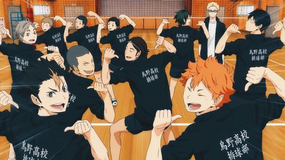
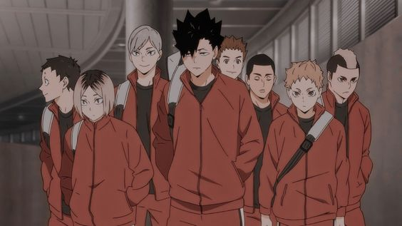
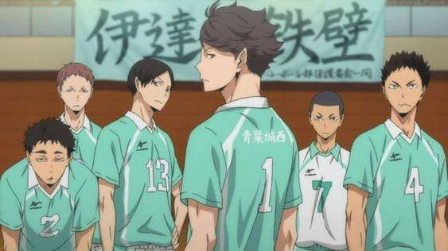
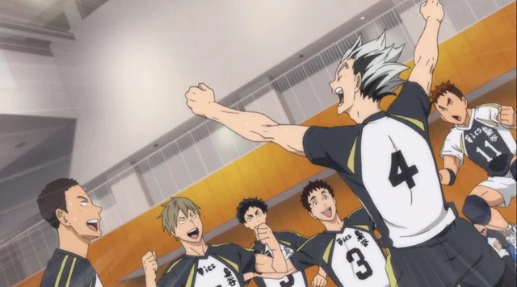
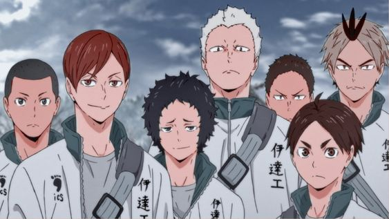
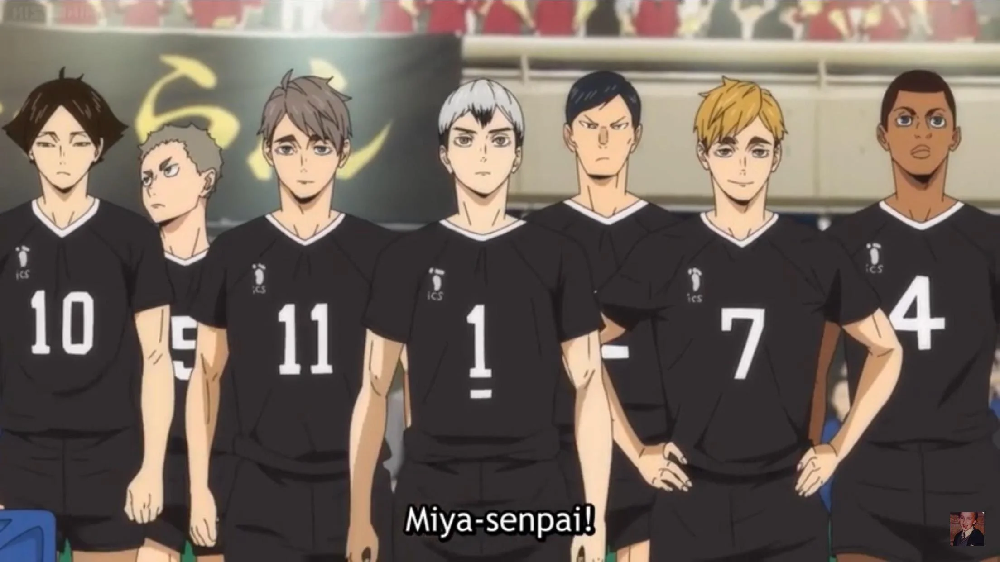

Haikyuu!!
Karasuno high
烏野高校
Fly
After Karasuno's initial success, they failed to pass its prefecture's preliminaries in future tournaments and therefore received the derogatory nicknames "The Fallen Champions" and "The Flightless Crows."
Colors: white, orange & black
Nekoma
音駒高校
Connect
Due to the players' flexibility and solid receives and digs, the Boys' Volleyball Club team is nicknamed "The Cats,"
They are said to be "destined rivals" of Karasuno.Colors: black & red
Aoba Johsai
青葉城西高校
Rule the court
Ranked in the top four of the prefecture
Colors: white & turquoise
Fukurodani
梟谷学園
One ball, heart and soul
Top 4 team of Tokyo
School's official representative: Owl
Colors: black, gold & white
Date Tech
伊達工業高校
Iron wall of date
Well-known for its exceptional defense and tall players; it has the highest blocking rate in the prefecture, thus nicknamed the "Iron Wall".
Colors: white & teal
Shiratorizawa

Irresistible force
Johzenji high

Simplicity and fortitude
Inarizaki
We don't need the memories